Contact Sheet
Quick overview of the generated screenshots.
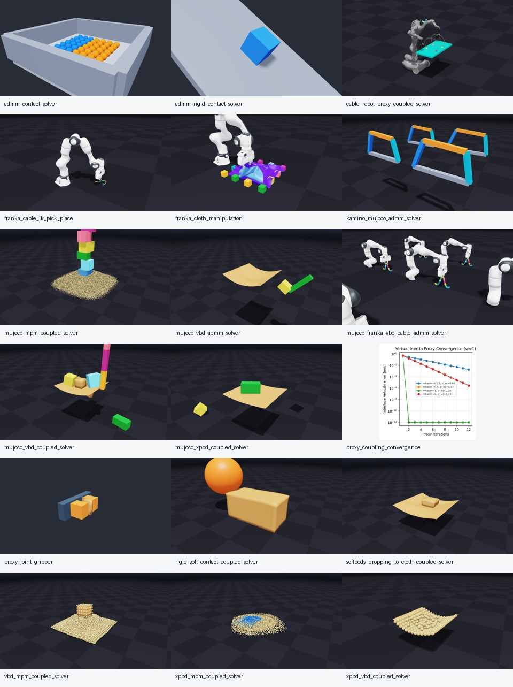
ADMM Contact, XPBD Particles In A Drawer
admm_contact_solver · captured after 90 frames · ok
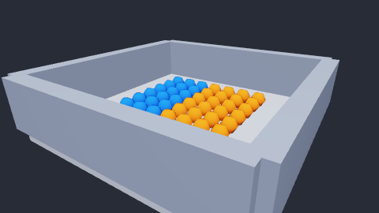
ADMM Rigid Contact, Tilting Plane
admm_rigid_contact_solver · captured after 120 frames · ok
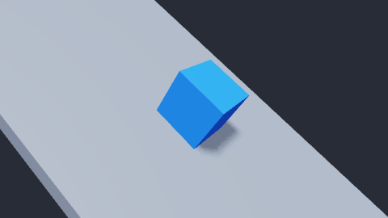
MuJoCo Robot + VBD Cable Proxy Coupling
cable_robot_proxy_coupled_solver · captured after 1279 frames · ok
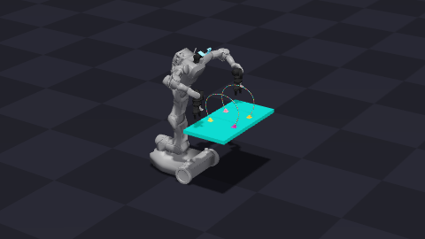
- Video uses the example's default camera preset and runs until the state machine reaches DONE.
Franka IK Pick-and-Place + VBD Cable Proxy Coupling
franka_cable_ik_pick_place · captured after 300 frames · ok
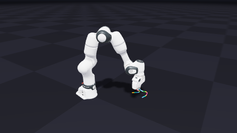
- Captures the proxy-coupled Franka/cable pick-and-place example through the later lift phase.
Franka Cloth Manipulation + VBD Proxy Coupling
franka_cloth_manipulation · captured after 420 frames · ok
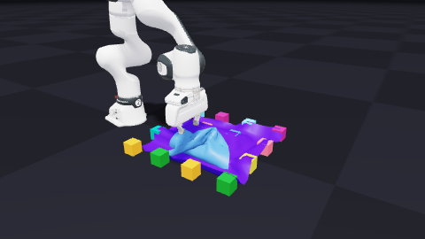
- Captures the proxy-coupled Franka/cloth manipulation example through the grasp/lift/hold sequence.
Kamino + MuJoCo ADMM Four-Bar
kamino_mujoco_admm_solver · captured after 90 frames · ok
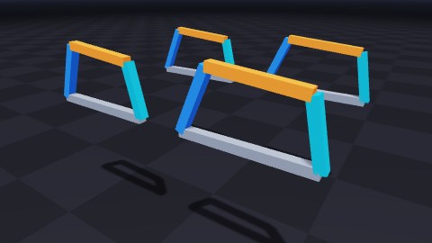
MuJoCo + MPM Proxy Coupling
mujoco_mpm_coupled_solver · captured after 70 frames · ok
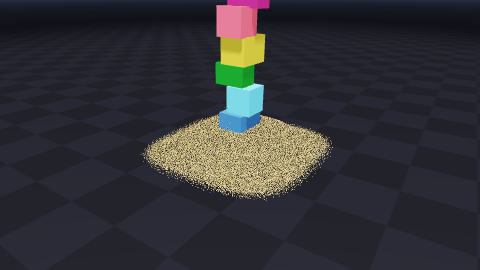
MuJoCo + VBD ADMM Pendulum And Cloth
mujoco_vbd_admm_solver · captured after 110 frames · ok
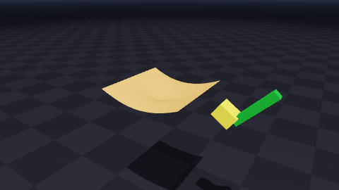
MuJoCo Franka + VBD Cable ADMM
mujoco_franka_vbd_cable_admm_solver · captured after 180 frames · ok
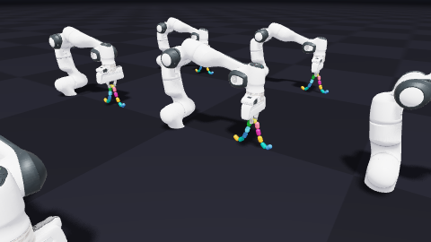
- Runs a longer preview of the dedicated ADMM Franka/cable example with its default parameters.
MuJoCo + VBD Proxy Coupling
mujoco_vbd_coupled_solver · captured after 90 frames · ok
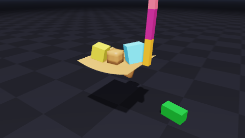
MuJoCo + XPBD Proxy Coupling
mujoco_xpbd_coupled_solver · captured after 90 frames · ok
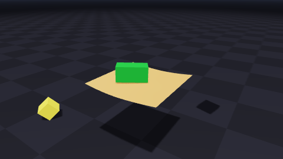
Proxy Coupling Convergence
proxy_coupling_convergence · captured after 12 frames · ok
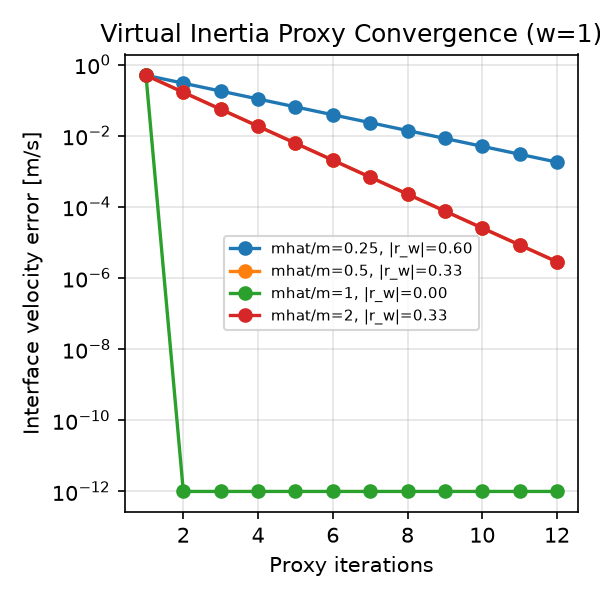
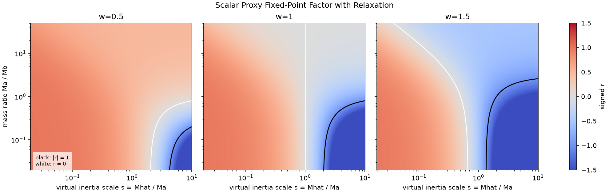
- Also writes the convergence and fixed-point-factor plots.
MuJoCo + VBD Proxy-Joint Gripper
proxy_joint_gripper · captured after 60 frames · ok
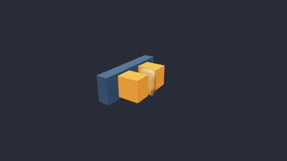
- Prismatic proxy joints track the MuJoCo drive targets during the VBD grasp attempt.
Rigid/Soft Contact, Coupled
rigid_soft_contact_coupled_solver · captured after 90 frames · ok
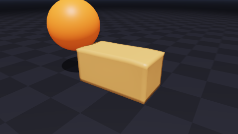
Soft Body Drop Onto Cloth, Coupled
softbody_dropping_to_cloth_coupled_solver · captured after 90 frames · ok
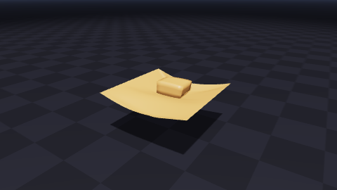
VBD Soft Body + MPM Proxy Coupling
vbd_mpm_coupled_solver · captured after 90 frames · ok
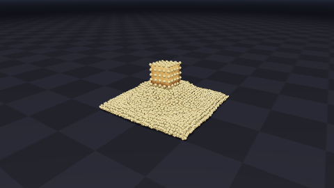
XPBD Particles + MPM Transfer Proxy Coupling
xpbd_mpm_coupled_solver · captured after 90 frames · ok
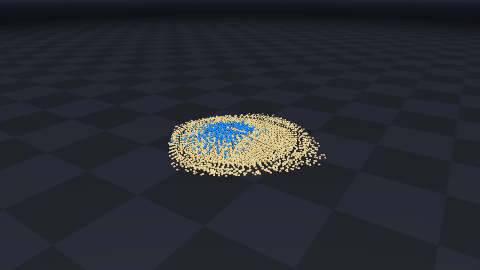
XPBD Particles + VBD Cloth Proxy Coupling
xpbd_vbd_coupled_solver · captured after 90 frames · ok
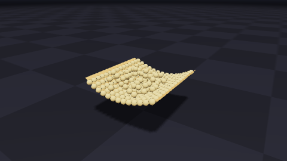